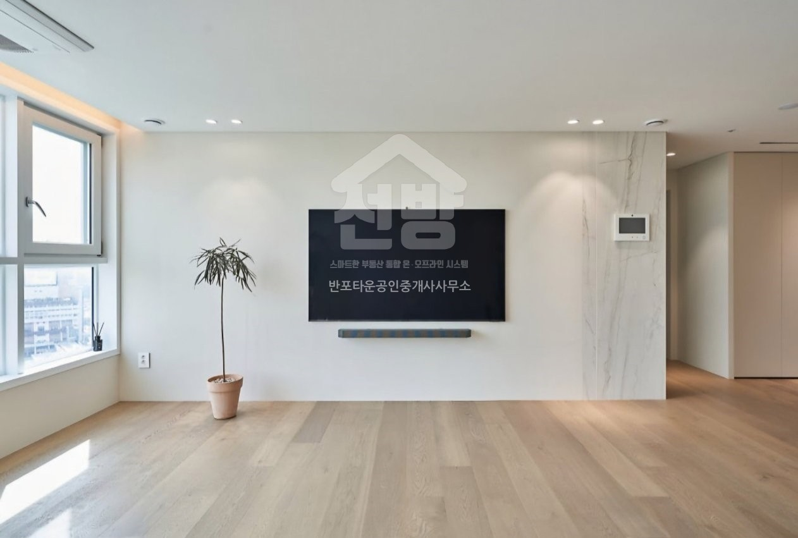

반포자이 전세를 찾을 때 먼저 정할 세 가지
반포자이 전세·월세 매물은 어디서 보고, 어떤 조건을 알려주면 되나요?
이 홈페이지의 반포자이 단지 페이지에서 전세와 월세를 나누어 볼 수 있습니다. 2026.10.29 확인 목록에는 전세 26건, 월세 15건이 있습니다. 실제 거래 가능 여부는 전화로 다시 확인해 주세요.

해당 단지에 등록된 개별 매물 사진 · 다른 세대의 상태를 대표하지 않습니다.
첫째, 희망 입주 시기를 정리해 주세요.
현재 거주지에서 나올 날짜와 새집에 들어가고 싶은 날짜, 조정 가능한 기간을 함께 알려주세요. 목록의 설명에 “즉시입주”나 “입주협의”가 있더라도 현재 조건은 달라질 수 있습니다. 방문 전에 정확한 일정을 확인하면 헛걸음을 줄일 수 있습니다.
둘째, 면적과 총예산을 구분해 주세요.
희망 전용면적과 보증금 범위를 정리해 주세요. 월세도 함께 검토한다면 가능한 보증금과 월 임대료를 따로 알려주시면 됩니다. 홈페이지의 월세 가격은 보증금 / 월 임대료 순서이며, 관리비 포함 여부와 금액은 개별 매물 원문에서 추가로 확인해야 합니다.
셋째, 관심 매물 번호를 함께 보내주세요.
같은 동·같은 면적에도 여러 매물이 있을 수 있습니다. 매물 상세 화면에 표시된 네이버 매물번호로 문의하면 어떤 집인지 정확하게 확인할 수 있습니다. 전화 02-537-2600으로 관심 번호와 입주 시기를 알려주세요.
네이버 중개소·매물, 중개소 정보, 리치고 단지 정보를 기준으로 정리했습니다. 자료 확인 2026.10.29.